CODING AGENTS AS PIXEL WORLD MODELS
traex/DeepSeek-V4.1-Flash · common50_0036
点击播放 · 原生 RGB 像素
逐轮保存的候选
回放视频、检查图与代码变化。
每份候选均可单独播放。实际图片检查记录在下方工具轨迹中。
候选 01播放与检查图
点击播放 · 原生 RGB 像素
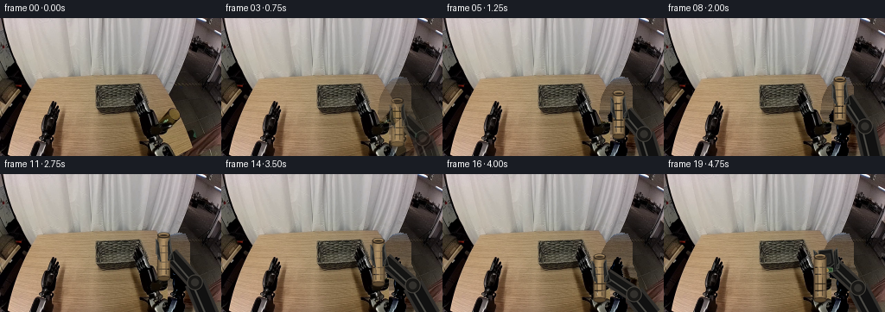
展开代码变化
--- 上一保存版本
+++ 本次保存版本
@@ -0,0 +1,415 @@
+from pathlib import Path
+
+import numpy as np
+from PIL import Image, ImageDraw
+
+import artifact_io
+
+
+CASE_DIR = Path(__file__).resolve().parent
+W, H = 256, 160
+N = 20
+SCALE = 4
+
+
+def smoothstep(value):
+ value = float(np.clip(value, 0.0, 1.0))
+ return value * value * (3.0 - 2.0 * value)
+
+
+def lerp(a, b, t):
+ return tuple(float(x + (y - x) * t) for x, y in zip(a, b))
+
+
+def eased_segment(frame, start, end):
+ return smoothstep((frame - start) / float(end - start))
+
+
+def object_mask():
+ mask = Image.new("L", (W, H), 0)
+ draw = ImageDraw.Draw(mask)
+ draw.polygon(
+ [
+ (194, 159), (195, 122), (185, 119), (181, 111),
+ (182, 101), (184, 90), (190, 79), (198, 70),
+ (207, 67), (214, 69), (219, 79), (219, 103),
+ (224, 115), (231, 159),
+ ],
+ fill=255,
+ )
+ draw.rounded_rectangle((194, 93, 213, 151), radius=8, fill=255)
+ return np.asarray(mask, dtype=np.float32) / 255.0
+
+
+def reconstruct_background(image):
+ """Replace the right gripper/cylinder with nearby table and curtain texture."""
+ image = image.astype(np.float32)
+ mask = object_mask() > 0.2
+ result = image.copy()
+
+ for y in range(H):
+ xs = np.flatnonzero(mask[y])
+ if not len(xs):
+ continue
+ left, right = int(xs[0]), int(xs[-1]) + 1
+ donor = image[y, 42:103].copy()
+ if not len(donor):
+ continue
+ tiled = np.resize(donor, (right - left, 3))
+ target_slice = result[y, left:right]
+ target_mask = mask[y, left:right]
+
+ left_reference = image[y, max(0, left - 12):left]
+ right_reference = image[y, right:min(W, right + 12)]
+ references = [part for part in (left_reference, right_reference) if len(part)]
+ if references:
+ local_mean = np.concatenate(references, axis=0).mean(axis=0)
+ donor_mean = donor.mean(axis=0)
+ tiled = tiled + (local_mean - donor_mean)
+
+ target_slice[target_mask] = tiled[target_mask]
+
+ # A tiny deterministic grain breaks up the copied row texture at mask edges.
+ rng = np.random.default_rng(17)
+ grain = rng.normal(0.0, 1.8, (H, W, 1))
+ result += grain * mask[..., None]
+ return np.clip(result, 0, 255).astype(np.uint8)
+
+
+def rotated_point(point, center, angle):
+ x, y = point
+ cx, cy = center
+ ca, sa = np.cos(angle), np.sin(angle)
+ return (
+ cx + x * ca - y * sa,
+ cy + x * sa + y * ca,
+ )
+
+
+def scaled_points(points, center, angle):
+ return [tuple(SCALE * v for v in rotated_point(point, center, angle)) for point in points]
+
+
+def polygon(draw, points, fill, outline=None, width=1):
+ draw.polygon(points, fill=fill)
+ if outline is not None:
+ draw.line(points + [points[0]], fill=outline, width=max(1, int(width * SCALE)), joint="curve")
+
+
+def draw_arm(layer, hand, angle, base=(242.0, 165.0)):
+ draw = ImageDraw.Draw(layer)
+ wrist = rotated_point((7.0, 18.0), hand, angle)
+
+ # Keep the elbow to the outside of the gripper as it traverses the table.
+ elbow = (
+ 0.52 * wrist[0] + 0.48 * base[0] + 7.0,
+ 0.55 * wrist[1] + 0.45 * base[1],
+ )
+
+ def line(points, color, width):
+ draw.line(
+ [(SCALE * x, SCALE * y) for x, y in points],
+ fill=color,
+ width=int(width * SCALE),
+ joint="curve",
+ )
+
+ # Outer metal casing, then a darker inset and a narrow reflected highlight.
+ line([base, elbow], (48, 46, 43, 255), 25)
+ line([elbow, wrist], (54, 51, 47, 255), 19)
+ line([base, elbow], (17, 17, 17, 255), 18)
+ line([elbow, wrist], (20, 20, 19, 255), 13)
+ line(
+ [
+ (base[0] - 4, base[1] - 2),
+ (elbow[0] - 4, elbow[1] - 1),
+ (wrist[0] - 3, wrist[1] - 1),
+ ],
+ (73, 72, 67, 255),
+ 2.2,
+ )
+
+ ex, ey = int(elbow[0] * SCALE), int(elbow[1] * SCALE)
+ er = int(9.0 * SCALE)
+ draw.ellipse((ex - er, ey - er, ex + er, ey + er), fill=(25, 24, 22, 255), outline=(69, 66, 60, 255), width=SCALE)
+ draw.ellipse((ex - er // 2, ey - er // 2, ex + er // 2, ey + er // 2), fill=(50, 48, 44, 255))
+
+ # Wrist block and the small green/gold identification plate seen in the source.
+ wrist_poly = scaled_points(
+ [(-7, 8), (8, 6), (11, 25), (-5, 27)],
+ hand,
+ angle,
+ )
+ polygon(draw, wrist_poly, (17, 18, 17, 255), (62, 61, 56, 255), 1.2)
+ label_center = rotated_point((1.5, 24.0), hand, angle)
+ lx, ly = int(label_center[0] * SCALE), int(label_center[1] * SCALE)
+ draw.rounded_rectangle(
+ (lx - 5 * SCALE, ly - 3 * SCALE, lx + 5 * SCALE, ly + 2 * SCALE),
+ radius=SCALE,
+ fill=(44, 74, 45, 255),
+ outline=(92, 115, 83, 255),
+ width=SCALE,
+ )
+ draw.ellipse(
+ (lx - 4 * SCALE, ly - 2 * SCALE, lx, ly + 2 * SCALE),
+ fill=(139, 109, 61, 255),
+ outline=(178, 143, 81, 255),
+ width=SCALE,
+ )
+
+
+def draw_palm(layer, hand, angle):
+ draw = ImageDraw.Draw(layer)
+ palm = scaled_points(
+ [(-8, 0), (8, 0), (9, 16), (4, 20), (-5, 20), (-9, 16)],
+ hand,
+ angle,
+ )
+ polygon(draw, palm, (24, 24, 23, 255), (70, 69, 65, 255), 1.3)
+ inner = scaled_points(
+ [(-5, 5), (5, 5), (5, 15), (2, 17), (-3, 17), (-6, 14)],
+ hand,
+ angle,
+ )
+ polygon(draw, inner, (35, 35, 33, 255), (54, 53, 50, 255), 0.8)
+ highlight = scaled_points([(-5.5, 1.5), (4.5, 1.5)], hand, angle)
+ draw.line(
+ [(SCALE * x, SCALE * y) for x, y in highlight],
+ fill=(93, 92, 86, 255),
+ width=SCALE,
+ )
+
+
+def draw_finger(layer, hand, angle, side, grip):
+ draw = ImageDraw.Draw(layer)
+ spread = (1.0 - grip) * 5.5
+ x0 = side * (6.5 + spread)
+ x1 = side * (8.5 + spread)
+ x2 = side * (7.5 + spread * 1.15)
+ points = [
+ (x0, 1.0),
+ (x1, -1.0),
+ (x2, 7.0),
+ (x2 + side * 0.7, 16.0),
+ (x2 - side * 1.0, 23.0),
+ (x0 - side * 1.6, 23.0),
+ (x0 - side * 0.8, 16.0),
+ (x0 - side * 0.4, 7.0),
+ ]
+ transformed = scaled_points(points, hand, angle)
+ polygon(draw, transformed, (17, 18, 17, 255), (77, 77, 73, 255), 1.1)
+
+ inset = [(x * 0.82, y + 2.0) for x, y in points]
+ polygon(
+ draw,
+ scaled_points(inset, hand, angle),
+ (31, 31, 30, 255),
+ (58, 58, 55, 255),
+ 0.65,
+ )
+ highlight = scaled_points(
+ [(x0 + side * 0.8, 3.0), (x0 + side * 0.8, 18.0)],
+ hand,
+ angle,
+ )
+ draw.line(
+ [(SCALE * x, SCALE * y) for x, y in highlight],
+ fill=(106, 106, 100, 255),
+ width=SCALE,
+ )
+
+ tip = scaled_points(
+ [
+ (x2 - side * 1.2, 18.5),
+ (x2 + side * 0.8, 17.2),
+ (x2, 22.8),
+ (x0 - side * 1.5, 22.8),
+ ],
+ hand,
+ angle,
+ )
+ polygon(draw, tip, (43, 43, 41, 255), (88, 87, 82, 255), 0.7)
+
+
+def draw_cylinder(layer, center):
+ draw = ImageDraw.Draw(layer)
+ cx, cy = center
+ radius = 7.3
+ top = cy - 25.0
+ bottom = cy + 25.0
+
+ # Soft contact shadow on the tabletop.
+ shadow = Image.new("RGBA", layer.size, (0, 0, 0, 0))
+ shadow_draw = ImageDraw.Draw(shadow)
+ sx, sy = int(cx * SCALE), int((bottom + 2.0) * SCALE)
+ shadow_draw.ellipse(
+ (sx - int(10 * SCALE), sy - int(2.5 * SCALE), sx + int(10 * SCALE), sy + int(3.2 * SCALE)),
+ fill=(35, 25, 16, 52),
+ )
+ layer.alpha_composite(shadow)
+
+ # Column shading. The warm brown tint and narrow highlights match the glass.
+ for ix in range(-int(radius * SCALE), int(radius * SCALE) + 1):
+ local_x = ix / SCALE
+ edge = abs(local_x) / radius
+ shade = 1.0 - 0.52 * edge ** 1.35
+ if local_x < 0:
+ shade *= 1.05
+ color = (
+ int(157 * shade + 12),
+ int(132 * shade + 8),
+ int(94 * shade + 5),
+ 255,
+ )
+ draw.line(
+ [(int(cx * SCALE) + ix, int(top * SCALE)), (int(cx * SCALE) + ix, int(bottom * SCALE))],
+ fill=color,
+ width=1,
+ )
+
+ # Rounded bottom and dark glass edge.
+ draw.ellipse(
+ (
+ int((cx - radius) * SCALE), int((bottom - 3.2) * SCALE),
+ int((cx + radius) * SCALE), int((bottom + 3.2) * SCALE),
+ ),
+ fill=(90, 71, 46, 255),
+ outline=(51, 41, 29, 255),
+ width=SCALE,
+ )
+ draw.rectangle(
+ (
+ int((cx - radius) * SCALE), int((top + 2) * SCALE),
+ int((cx + radius) * SCALE), int((bottom - 2) * SCALE),
+ ),
+ fill=None,
+ outline=(77, 60, 41, 255),
+ width=SCALE,
+ )
+
+ # Vertical reflected bands and subtle horizontal cast-glass bands.
+ for offset, color, width in [(-3.0, (190, 163, 118, 110), 1.0), (2.7, (111, 87, 58, 110), 0.8)]:
+ x = int((cx + offset) * SCALE)
+ draw.line(
+ [(x, int((top + 7) * SCALE)), (x, int((bottom - 5) * SCALE))],
+ fill=color,
+ width=max(1, int(width * SCALE)),
+ )
+ for yy in (top + 12, top + 20, top + 31, top + 39):
+ draw.line(
+ [(int((cx - radius + 1.3) * SCALE), int(yy * SCALE)),
+ (int((cx + radius - 1.3) * SCALE), int(yy * SCALE))],
+ fill=(103, 82, 57, 48),
+ width=SCALE,
+ )
+
+ # Thick open rim and the dark interior of the glass.
+ draw.ellipse(
+ (
+ int((cx - radius) * SCALE), int((top - 3.4) * SCALE),
+ int((cx + radius) * SCALE), int((top + 3.4) * SCALE),
+ ),
+ fill=(84, 66, 44, 255),
+ outline=(47, 38, 28, 255),
+ width=int(1.3 * SCALE),
+ )
+ draw.ellipse(
+ (
+ int((cx - radius + 2.0) * SCALE), int((top - 1.7) * SCALE),
+ int((cx + radius - 2.0) * SCALE), int((top + 1.9) * SCALE),
+ ),
+ fill=(53, 43, 31, 255),
+ outline=(122, 97, 66, 255),
+ width=SCALE,
+ )
+ draw.arc(
+ (
+ int((cx - radius + 1.0) * SCALE), int((top - 2.7) * SCALE),
+ int((cx + radius - 1.0) * SCALE), int((top + 2.7) * SCALE),
+ ),
+ 200,
+ 338,
+ fill=(205, 176, 129, 255),
+ width=int(0.8 * SCALE),
+ )
+
+
+def render_scene(background, hand, angle, grip, cylinder_center, show_arm=True):
+ layer = Image.new("RGBA", (W * SCALE, H * SCALE), (0, 0, 0, 0))
+ if show_arm:
+ draw_arm(layer, hand, angle)
+ draw_palm(layer, hand, angle)
+ draw_finger(layer, hand, angle, -1, grip)
+ draw_finger(layer, hand, angle, 1, grip)
+ draw_cylinder(layer, cylinder_center)
+ # Foreground fingertips overlap the cylinder just enough to sell the grasp.
+ if grip > 0.25:
+ draw_finger(layer, hand, angle, -1, grip)
+ draw_finger(layer, hand, angle, 1, grip)
+ else:
+ draw_cylinder(layer, cylinder_center)
+
+ sprite = layer.resize((W, H), Image.Resampling.LANCZOS)
+ scene = Image.fromarray(background, "RGB").convert("RGBA")
+ scene.alpha_composite(sprite)
+ return np.asarray(scene.convert("RGB"), dtype=np.uint8)
+
+
+def pose_for_frame(frame):
+ start = (203.0, 101.0)
+ lifted = (203.0, 76.0)
+ target_high = (181.0, 76.0)
+ target_low = (181.0, 101.0)
+
+ if frame <= 3:
+ hand, grip, attached = start, 1.0, True
+ elif frame <= 8:
+ t = eased_segment(frame, 3, 8)
+ hand, grip, attached = lerp(start, lifted, t), 1.0, True
+ elif frame <= 13:
+ t = eased_segment(frame, 8, 13)
+ hand, grip, attached = lerp(lifted, target_high, t), 1.0, True
+ elif frame <= 16:
+ t = eased_segment(frame, 13, 16)
+ hand, grip, attached = lerp(target_high, target_low, t), 1.0, True
+ else:
+ t = eased_segment(frame, 16, 19)
+ hand = lerp(target_low, (187.0, 88.0), t)
+ grip, attached = 1.0 - 0.95 * smoothstep((frame - 16) / 2.0), False
+
+ angle = -0.10 + 0.035 * np.sin((frame / (N - 1)) * np.pi)
+ object_center = (hand[0] + 0.8, hand[1] + 20.0)
+ if not attached:
+ object_center = (181.0, 121.0)
+ return hand, angle, grip, object_center
+
+
+def generate():
+ original = np.asarray(Image.open(CASE_DIR / "first_frame.png").convert("RGB"), dtype=np.uint8)
+ background = reconstruct_background(original)
+ frames = []
+
+ for frame in range(N):
+ if frame <= 1:
+ frames.append(original.copy())
+ continue
+
+ hand, angle, grip, cylinder_center = pose_for_frame(frame)
+ rendered = render_scene(background, hand, angle, grip, cylinder_center)
+
+ # Ease from the photographed source pose into the articulated render.
+ if frame == 2:
+ rendered = np.clip(0.74 * original + 0.26 * rendered, 0, 255).astype(np.uint8)
+ elif frame == 3:
+ rendered = np.clip(0.34 * original + 0.66 * rendered, 0, 255).astype(np.uint8)
+ frames.append(rendered)
+
+ frames = np.stack(frames, axis=0)
+ assert frames.shape == (N, H, W, 3) and frames.dtype == np.uint8
+ assert np.array_equal(frames[0], original)
+ artifact_io.save(frames, CASE_DIR)
+ return frames
+
+
+if __name__ == "__main__":
+ generate()
候选 02播放与检查图
点击播放 · 原生 RGB 像素

展开代码变化
--- 上一保存版本
+++ 本次保存版本
@@ -358,8 +358,8 @@
def pose_for_frame(frame):
start = (203.0, 101.0)
lifted = (203.0, 76.0)
- target_high = (181.0, 76.0)
- target_low = (181.0, 101.0)
+ target_high = (186.0, 76.0)
+ target_low = (186.0, 101.0)
if frame <= 3:
hand, grip, attached = start, 1.0, True
@@ -374,13 +374,13 @@
hand, grip, attached = lerp(target_high, target_low, t), 1.0, True
else:
t = eased_segment(frame, 16, 19)
- hand = lerp(target_low, (187.0, 88.0), t)
+ hand = lerp(target_low, (191.0, 87.0), t)
grip, attached = 1.0 - 0.95 * smoothstep((frame - 16) / 2.0), False
angle = -0.10 + 0.035 * np.sin((frame / (N - 1)) * np.pi)
- object_center = (hand[0] + 0.8, hand[1] + 20.0)
+ object_center = (hand[0] + 0.3, hand[1] + 20.0)
if not attached:
- object_center = (181.0, 121.0)
+ object_center = (186.0, 121.0)
return hand, angle, grip, object_center
候选 03播放与检查图
点击播放 · 原生 RGB 像素

展开代码变化
代码未变化；重新保存了产物。
候选 04播放与检查图
点击播放 · 原生 RGB 像素

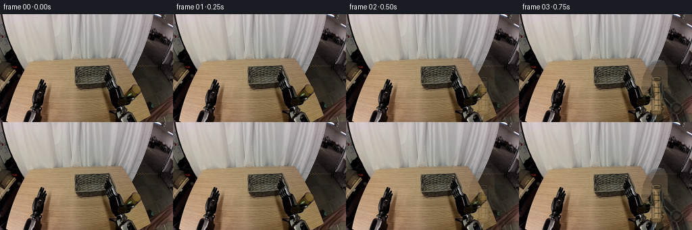
展开代码变化
--- 上一保存版本
+++ 本次保存版本
@@ -235,8 +235,8 @@
draw = ImageDraw.Draw(layer)
cx, cy = center
radius = 7.3
- top = cy - 25.0
- bottom = cy + 25.0
+ top = cy - 22.0
+ bottom = cy + 22.0
# Soft contact shadow on the tabletop.
shadow = Image.new("RGBA", layer.size, (0, 0, 0, 0))
@@ -295,7 +295,7 @@
fill=color,
width=max(1, int(width * SCALE)),
)
- for yy in (top + 12, top + 20, top + 31, top + 39):
+ for yy in (top + 11, top + 19, top + 29, top + 37):
draw.line(
[(int((cx - radius + 1.3) * SCALE), int(yy * SCALE)),
(int((cx + radius - 1.3) * SCALE), int(yy * SCALE))],
@@ -350,7 +350,7 @@
draw_cylinder(layer, cylinder_center)
sprite = layer.resize((W, H), Image.Resampling.LANCZOS)
- scene = Image.fromarray(background, "RGB").convert("RGBA")
+ scene = Image.fromarray(background).convert("RGBA")
scene.alpha_composite(sprite)
return np.asarray(scene.convert("RGB"), dtype=np.uint8)
@@ -378,9 +378,9 @@
grip, attached = 1.0 - 0.95 * smoothstep((frame - 16) / 2.0), False
angle = -0.10 + 0.035 * np.sin((frame / (N - 1)) * np.pi)
- object_center = (hand[0] + 0.3, hand[1] + 20.0)
+ object_center = (hand[0] + 0.3, hand[1] - 1.0)
if not attached:
- object_center = (186.0, 121.0)
+ object_center = (186.0, 101.0)
return hand, angle, grip, object_center
候选 05播放与检查图

可观测工具轨迹
实际执行的命令与返回图片。
命令 1exit 0
/bin/bash -c "pwd && rg --files -g '"'!*__pycache__*'"' -g '"'!*.pyc'"' | sed -n '1,200p'"
命令 2exit 0
/bin/bash -c "sed -n '1,240p' prompt.txt"
命令 3exit 0
/bin/bash -c "sed -n '1,320p' GENERATION_RULES.md"
命令 4exit 0
/bin/bash -c "find . -maxdepth 3 -type f -printf '%p\\t%k KB\\n' | sort | sed -n '1,240p'"
命令 5exit 0
/bin/bash -c "sed -n '1,260p' task_spec.json"
命令 6exit 0
/bin/bash -c "sed -n '1,260p' artifact_io.py"
命令 7exit 0
/bin/bash -c "sed -n '1,260p' player_template.html"
命令 8exit 0
/bin/bash -c "python - <<'PY'
from PIL import Image
im=Image.open('first_frame.png')
print(im.mode, im.size)
PY"命令 9exit 0
/bin/bash -c "python - <<'PY'
from PIL import Image
im=Image.open('first_frame.png')
im.crop((130,55,245,160)).resize((460,420)).save('crop_right.png')
im.crop((0,80,120,160)).resize((480,320)).save('crop_left.png')
PY"命令 10exit 0
/bin/bash -c "python - <<'PY'
from PIL import Image, ImageEnhance
im=Image.open('first_frame.png')
im.resize((1024,640), Image.Resampling.NEAREST).save('first_frame_4x.png')
PY"命令 11exit 0
/bin/bash -c "python - <<'PY'
try:
import cv2; print('cv2', cv2.__version__)
except Exception as e: print('no cv2', e)
try:
import scipy; print('scipy', scipy.__version__)
except Exception as e: print('no scipy', e)
PY"命令 12exit 0
/bin/bash -c "python - <<'PY'
import numpy as np
from PIL import Image
im=np.array(Image.open('first_frame.png'))
# print color samples around cylinder, gripper, basket
for y in [72,75,80,85,90,95,100,105,110,115,120,125,130,135,140,145]:
row=[]
for x in [150,155,160,165,170,175,180,185,190,195,200,205,210,215]:
r,g,b=im[y,x]
row.append(f'{x}:{r:02x}{g:02x}{b:02x}')
print(y,' '.join(row))
PY"命令 13exit 0
/bin/bash -c 'python generate.py'
命令 14exit 0
/bin/bash -c "python - <<'PY'
from PIL import Image, ImageDraw
from pathlib import Path
files=sorted(Path('frames').glob('*.png'))
# selected keyframes, 5 columns x 2 rows at 2x
idx=[0,2,3,4,6,8,10,12,14,16,18,19]
w,h=256,160
sheet=Image.new('RGB',(w*4,(h+20)*3),(20,20,20)); d=ImageDraw.Draw(sheet)
for i,j in enumerate(idx):
x=(i%4)*w; y=(i//4)*(h+20)
sheet.paste(Image.open(files[j]),(x,y+20)); d.text((x+4,y+3),f'{j:02d}',fill='white')
sheet.resize((sheet.width*2,sheet.height*2),Image.Resampling.NEAREST).save('keyframes.png')
PY"命令 15exit 0
/bin/bash -c "python - <<'PY'
import numpy as np
from PIL import Image
import generate
im=np.asarray(Image.open('first_frame.png'))
Image.fromarray(generate.reconstruct_background(im)).resize((1024,640),Image.Resampling.NEAREST).save('background_reconstructed.png')
PY"命令 16exit 0
/bin/bash -c "python - <<'PY'
import numpy as np
from PIL import Image
im=np.array(Image.open('first_frame.png'))
# boundary of dark robot mask for each row, based on luminance and saturation heuristics
for y in range(65,160,3):
rgb=im[y].astype(float)
lum=rgb.mean(1)
# dark run starting x>=180
xs=np.flatnonzero(lum[180:]<70)+180
if len(xs): print(y, xs.min(), xs.max(), len(xs))
PY"命令 17exit 0
/bin/bash -c "python - <<'PY'
from PIL import Image
im=Image.open('first_frame.png')
im.crop((175,60,235,150)).resize((600,900),Image.Resampling.NEAREST).save('cylinder_zone.png')
PY"命令 18exit 0
/bin/bash -c "python - <<'PY'
import numpy as np
from PIL import Image
im=np.array(Image.open('first_frame.png'))
# print a compact class map for right region using colors
chars=' .:-=+*#%@'
for y in range(60,151,2):
s=''
for x in range(175,231,2):
r,g,b=im[y,x].mean(0) if False else im[y,x]
lum=.2126*r+.7152*g+.0722*b
s+=chars[min(9,int(lum/256*10))]
print(f'{y:3d}',s)
PY"命令 19exit 0
/bin/bash -c "python - <<'PY'
from PIL import Image, ImageDraw
idx=[0,2,3,4,5,6,7,8,9,10,11,12,13,14,15,16,17,18,19]
w,h=256,160
sheet=Image.new('RGB',(w*5,(h+18)*4),(25,25,25));d=ImageDraw.Draw(sheet)
for i,j in enumerate(idx):
x=(i%5)*w;y=(i//5)*(h+18)
sheet.paste(Image.open(f'frames/{j:02d}.png'),(x,y+18));d.text((x+4,y+2),f'{j:02d}',fill='white')
sheet.save('all_frames.png')
PY"命令 20exit 0
/bin/bash -c "python generate.py && python - <<'PY'
import json, numpy as np
from PIL import Image
from pathlib import Path
frames=np.stack([np.asarray(Image.open(p)) for p in sorted(Path('frames').glob('*.png'))])
orig=np.asarray(Image.open('first_frame.png'))
print('shape',frames.shape,'dtype',frames.dtype)
print('first identical',np.array_equal(frames[0],orig))
print('changed px/frame',[int(np.any(frames[i]"'!=frames[i-1],axis=2).sum()) for i in range(1,20)])
print('"'pixels npz',np.load('pixels.npz')['pixels'].shape)
print('html bytes',Path('index.html').stat().st_size)
PY"命令 21exit 1
/bin/bash -c "python - <<'PY'
import numpy as np
from PIL import Image, ImageFilter
import generate
orig=np.asarray(Image.open('first_frame.png'))
bg=Image.fromarray(generate.reconstruct_background(orig))
# crop right effector and cylinder from source, feather outer 5 px
x0,y0,x1,y1=188,76,244,160
crop=Image.fromarray(orig[y0:y1,x0:x1]).convert('RGBA')
a=np.ones((y1-y0,x1-x0),np.uint8)*255
f=6
for i in range(f):
v=int(255*(i+1)/(f+1))
a[i,:]=np.minimum(a[i,:],v);a[-1-i,:]=np.minimum(a[-1-i,:],v);a[:,i]=np.minimum(a[:,i],v);a[:,-1-i]=np.minimum(a[:,-1-i],v)
crop.putalpha(Image.fromarray(a).filter(ImageFilter.GaussianBlur(1.0)))
for j,(dx,dy) in enumerate([(0,0),(-4,-8),(-10,-18),(-16,-22),(-18,-18),(-18,-8)]):
im=bg.copy();im.alpha_composite(crop,(x0+dx,y0+dy));im.convert('RGB').save(f'sprite_{j}.png')
# sheet
sheet=Image.new('RGB',(256*3,160*2))
for j in range(6):sheet.paste(Image.open(f'sprite_{j}.png'),((j%3)*256,(j//3)*160))
sheet.resize((1536,640),Image.Resampling.NEAREST).save('sprite_sheet.png')
PY"命令 22exit 0
/bin/bash -c 'rg -n "radius =|top =|for yy|object_center|scene = Image" generate.py'
命令 23exit 0
/bin/bash -c 'python generate.py'
命令 24exit 0
/bin/bash -c "ffmpeg -version | sed -n '1,3p'"
命令 25exit 0
/bin/bash -c "python - <<'PY'
from PIL import Image
import numpy as np
for i in [0,2,3,8,13,16,17,18,19]:
im=np.asarray(Image.open(f'frames/{i:02d}.png')).astype(float)
# dark robot arm coverage in right side and warm cylinder pixels
rgb=im
dark=(rgb.mean(2)<60)
warm=(rgb[:,:,0]>rgb[:,:,1]*1.08)&(rgb[:,:,1]>rgb[:,:,2]*1.05)&(rgb.mean(2)>45)&(rgb.mean(2)<190)
print(i,'dark',int(dark.sum()),'warm',int(warm.sum()))
PY"命令 26exit 0
/bin/bash -c "python - <<'PY'
from pathlib import Path
from PIL import Image
import numpy as np
from generate import generate
frames=generate()
orig=np.asarray(Image.open('first_frame.png'))
assert np.array_equal(frames[0],orig)
assert frames.shape==(20,160,256,3) and frames.dtype==np.uint8
for i in range(20):
assert Image.open(f'frames/{i:02d}.png').size==(256,160)
# Check object remains in the right half and has plausible vertical support.
for i in range(20):
a=frames[i].astype(float)
warm=(a[:,:,0]>a[:,:,1]*1.12)&(a[:,:,1]>a[:,:,2]*1.08)&(a.mean(2)>50)&(a.mean(2)<185)
ys,xs=np.where(warm & (np.indices(warm.shape)[1]>170))
print(f'{i:02d} warm_x={xs.min():3d}..{xs.max():3d} warm_y={ys.min():3d}..{ys.max():3d}')
print('validated',frames.shape)
PY"视觉工具实际返回图片 1

视觉工具实际返回图片 2
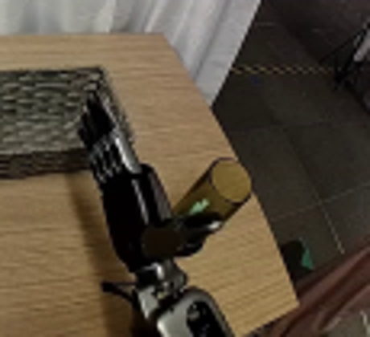
视觉工具实际返回图片 3
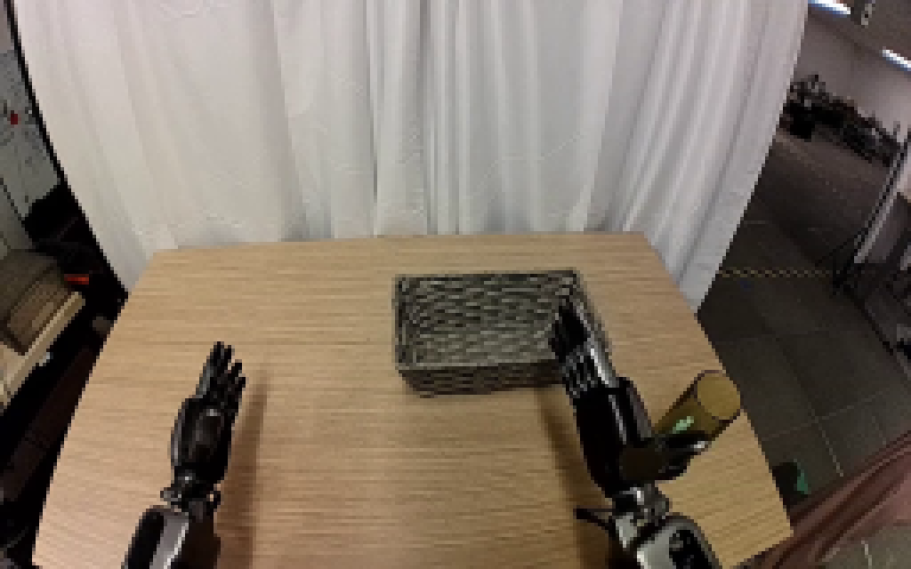
视觉工具实际返回图片 4

视觉工具实际返回图片 5
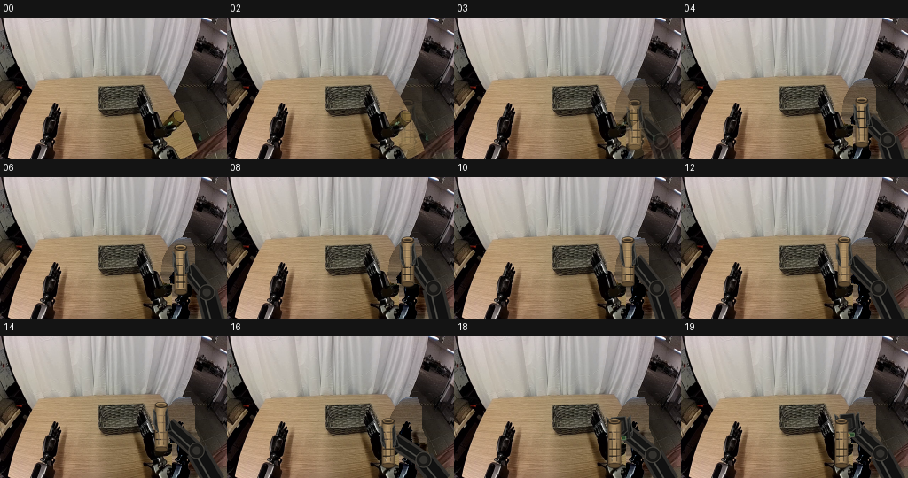
视觉工具实际返回图片 6
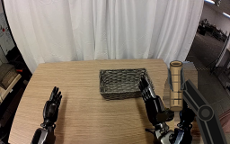
视觉工具实际返回图片 7
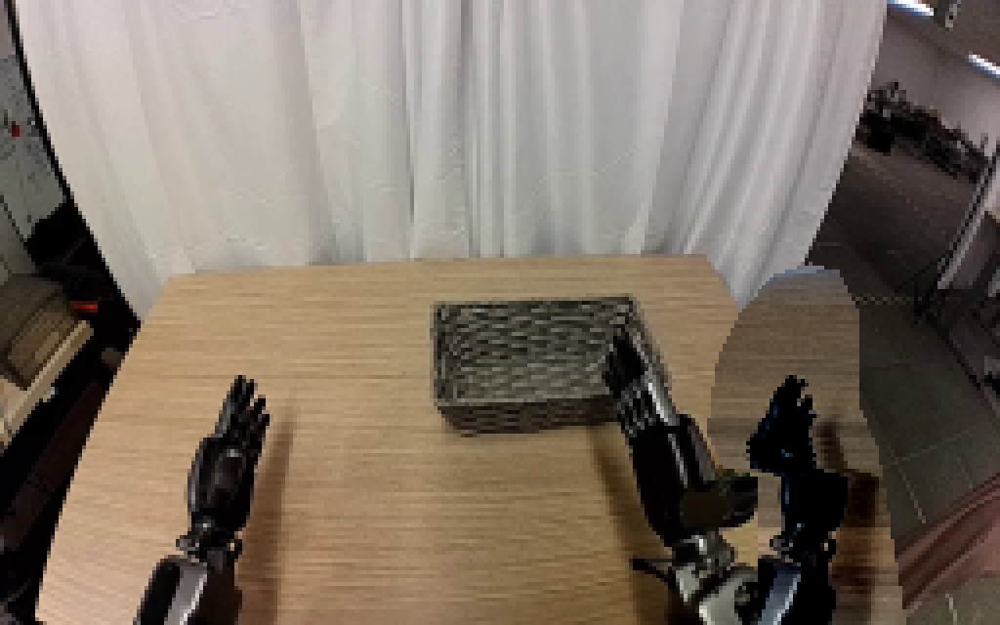
视觉工具实际返回图片 8
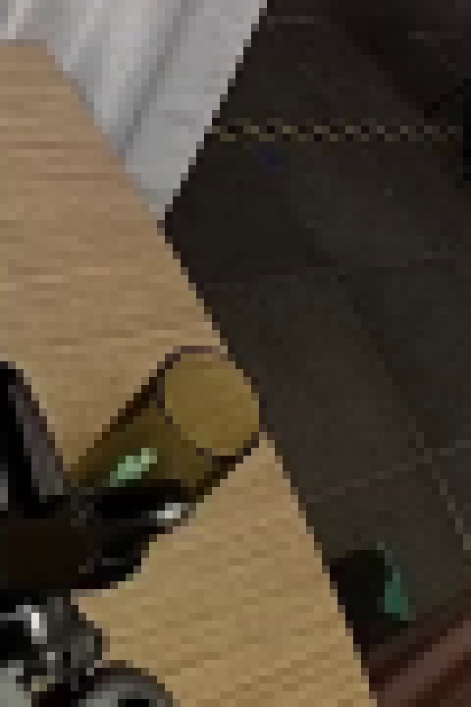
视觉工具实际返回图片 9
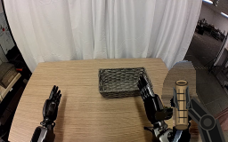
视觉工具实际返回图片 10
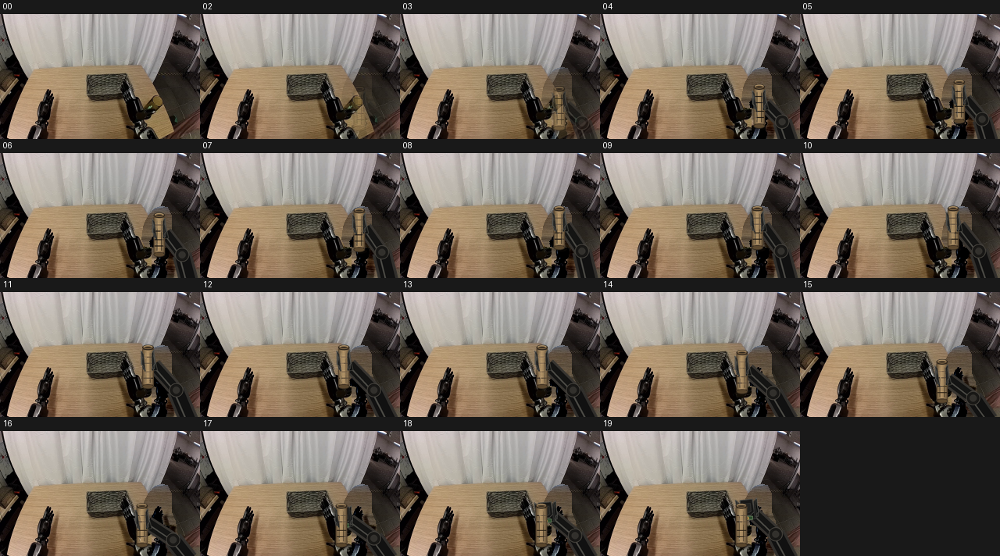
视觉工具实际返回图片 11
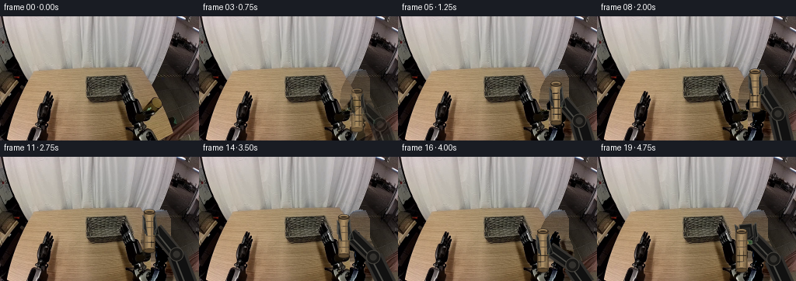
视觉工具实际返回图片 12
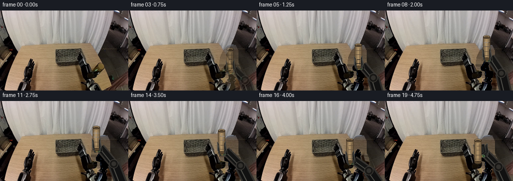
视觉工具实际返回图片 13
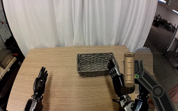
视觉工具实际返回图片 14
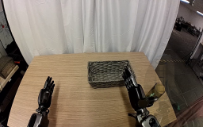
视觉工具实际返回图片 15
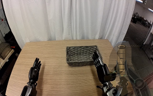
视觉工具实际返回图片 16
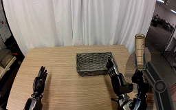
保存候选 5 份；完成命令 26 次；可验证图片返回 16 张。原始 API 响应与完整日志保留在本地。